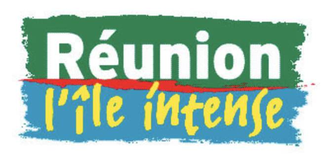

Suite de l'article du mois précédent…

Cela dit, pour la beauté, on a aussi le site officiel de tourisme de l'île. Lagement entretenu par les collectivités locales et le ministère du tourisme, ce site reprends l'imagerie qui s'expose sur les affiches du métro parisien… « l'île intense », c'est eux. Ils offrent un large panorama de l'île dans un bel embalage. Ce site peut prétendre à être indispensable avant de partir. Mais n'oubliez pas de voir celui-ci régulièrement pour vouloir partir !
Évidemment, depuis 1999, le web a pris de l'importance et les sites officiels ont bénéficié de meilleurs budgets pour le meilleur et pour le pire. Passer de www.la-reunion-tourisme.com à reunion.fr a été un passage important montrant l'importance du tourisme pour l'économie et la vie locale. Sans surprise notre site touristique officiel utilise les dernieres technologies pour offrir un panorama complet des visites et activités qui s'offrent aux touristes. Un panorama qui en met plein la vue avec de superbes photos de magazines et des vidéos qui vous projettent déjà là bas. La navigation, elle aussi, en met plein la vue et s'affranchit de la simplicité en prenant le risque d'envoyer ailleurs les gens qui aimeraient visiter un endroit sans se prendre la tête à trouver son adresse.